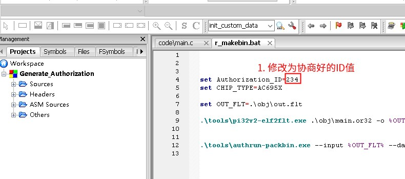
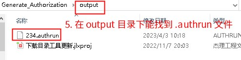

4.5. 支持的芯片型号和授权执行文件工程模板
4.5.1. 烧录器支持多算法授权功能的型号
烧录器支持多算法授权功能的芯片型号，以及对应支持授权执行文件的容量大小情况如下：
芯片型号 |
支持授权执行文件的大小 |
|---|---|
AD17N |
512 |
AD15N、AE15N |
2K |
AC632N、AE632N |
4K |
AC695X、AC635N、AC6083、AE695N、 |
4K |
AC696X、AC636N、AC608N、AC706N、 |
8k |
如下型号，需要isd_download 4.2.54以上版本，且在isd_config.ini配置如下字段：
[EXTRA_CFG_PARAM]
OTP_CFG_SIZE=512;
#AC707N、AW34N 、AD24N型号芯片最小的值建议配置128;
#其它型号最小值建议配置256;一般使用公版SDK默认配置的值即可；
芯片型号 |
支持授权执行文件的大小 |
|---|---|
AD21N |
1K |
AC82N、AD18N、AC129N、AD12N |
2K |
AD21N、AD23N、AD24N、AW30N、 |
4K |
AC707N、AW34N、AC704N、AC705N、 |
默认支持8K |
Important
注意：
1、授权执行文件总大小等于静态空间+动态空间：
静态空间： SIZE = .text +.data +.bss几个段的总大小
动态空间：codeblocks编译环境加上链接参数：–plugin-opt=-warn-stack-size=64；编译会提示各个函数栈使用情况;可以参考《为什么链接时提示 stack size limit exceeded 警告》了解
点击编译（Rebuild）时“Build log”窗口有数据段的大小提示
2、不同型号的ram资源大小不同，建议不要做过于复杂算法，以免编译出来的执行文件过大，导致烧录运行失败；
3、不用使用太大的stack栈，stack栈里面定义的buffer改成全局变量;不然静态空间小于支持的执行文件大小，但是还可能存在烧录执行文件跑死的情况；
4、AC701N、JL701N等支持配置或者不配置OTP_CFG_SIZE=512;根据SDK设计进行处理，一般新版本SDK支持配置OTP_CFG_SIZE=512，即flash参数写到otp_cfg区域；旧sdk则写到flash末尾;
4.5.2. 授权执行文件工程模板下载
支持多算法授权功能的芯片有3种架构，如下不同型号对应的授权执行文件工程模版下载链接（如未能确认芯片对应哪个工程模版，请联系杰理公司）：
q32s芯片架构
对应的芯片型号： AC632N、AW31N、AW33N
对应的工程模版： 点击此处下载工程模板
pi32芯片架构
对应的芯片型号： AC82N、 AD14N、AC104N 、AD15N、、AD17N、AD24N 、AW30N
对应的工程模版： 点击此处下载工程模板
pi32v2芯片架构
对应的芯片型号： 上述q32s和pi32芯片架构
对应型号外的其他型号对应的工程模版： 点击此处下载工程模板
4.5.3. 支持多算法授权的sdk补丁
Note
大部分sdk原生就支持多算法授权，不需要补丁
请直接参考算法库（.a 文件）添加授权数据验证,
如sdk出现 链接错误 ‘ sys_cfg_read_otp未定义 ‘，则更新对应的补丁,如没找到补丁则按照多算法授权补丁申请进行申请
目前支持多算法授权的sdk补丁如下：
芯片类型 |
补丁 |
|---|---|
AC632N |
|
695N/635N |
|
696N/636N |
|
697N |
|
700N |
|
701N |
|
AD14N |
|
AD15N |
|
AD16N |
|
AD17N |
|
706N |
补丁使用方式：找到对应sdk 的tools 目录下cpu.a 并替换即可。
4.5.4. 多算法授权补丁申请
如果未能找到你需要的芯片型号，请联系杰理公司weiyushu@zh-jieli.com
请邮件注明芯片型号和sdk版本，并把当前sdk的cpu.a做邮件附件一并发送：
4.5.4.1. 邮件申请格式
为了确保您的申请能够得到及时且准确的处理，请按照以下格式发送邮件：
邮件主题：[申请多算法授权补丁]-[芯片型号]-[sdk版本]
示例：[申请多算法授权补丁]-AC632N-ac63_bt_sdk_release_v2.3.0
4.5.4.2. 注意事项
请确保邮件主题清晰、准确，以便快速识别和处理您的申请。
附件中的
cpu.a文件需为当前芯片对应的版本，以避免兼容性问题。如有任何疑问或需要进一步说明，请在邮件中详细说明。
4.5.5. 具体的使用方式
下载与芯片对应的模板工程。（如果未能找到你需要的芯片型号，请联系杰理公司）
修改
r_makebin.bat脚本中，对应修改Authorization_ID为协商好的 ID（示例中是 234）ID 可用范围 64 ~ 999

Important
注意，在修改 r_makebin.bat 中，下面的这两句话的时候，不能多余的空格（等号前后，行尾），bat脚本对空格是敏感的。
set Authorization_ID=234
set CHIP_TYPE=AC695X
修改
code/main.c文件中，返回的加密数据（即、授权数据）的长度修改
code/main.c文件中，返回的加密数据（即、授权数据）的生成方式Note
模板工程中，给的示例是将 flash uuid 异或后，作为加密数据。 这个是一个较弱的方式，一般而言，建议算法公司将其修改为自定义的，其他人不知道也不容易破解的方式

Note
在烧录器烧录芯片的过程中，会调用 .authrun 文件中的 c_main 函数
回调函数 c_main 被烧录器调用时，ops 结构体中的 flash_id、seq、timestamp、uuid 这些值已经由烧录器端填写完成
回调函数 c_main 需要负责填充 out_enc_data 并返回 out_len
烧录器将 out_enc_data 中长度为 out_len 的内容写入到芯片中
烧录器的处理流程，伪代码如下：
//--------- struct flash_ops ops; // 这些代码是烧录器端实现的，算法公司无需关心 ops.flash_id = get_flash_id(); // 这些代码是烧录器端实现的，算法公司无需关心 ops.seq = get_program_seq(); // 这些代码是烧录器端实现的，算法公司无需关心 ops.timestamp = get_timestamp();// 这些代码是烧录器端实现的，算法公司无需关心 ops.uuid = get_flash_uuid(); // 这些代码是烧录器端实现的，算法公司无需关心 ops.out_enc_data = buf; // 这些代码是烧录器端实现的，算法公司无需关心 ops.len = buf_size; // 这些代码是烧录器端实现的，算法公司无需关心 //--------- // 注意： .uuid 的长度固定为 16 个字节 // 算法公司需要实现 .authrun 中的 c_main 函数 int out_len = c_main(&ops); // 调用 .authrun 的 c_main 回调函数 // 调用 c_main 后，out_enc_data 内容应该已经被填充，并返回 out_len（需要写入芯片的加密数据长度） // out_len 一般长度不能超过255，一些资源少的芯片型号，实际长度会更小，具体以实际测试为准 write_to_flash(get_program_address(), // 这些代码是烧录器端实现的，算法公司无需关心 ops.out_enc_data, // 这些代码是烧录器端实现的，算法公司无需关心 out_len); // 这些代码是烧录器端实现的，算法公司无需关心
点击 Code::Blocks 中的重新编译，生成得到
.authrun文件
在
output目录下，找到对应的.authrun文件
上传
.authrun文件到杰理服务器，用以后续售出
Important
注意：
一般情况下，不要直接将
.authrun文件直接发给客户